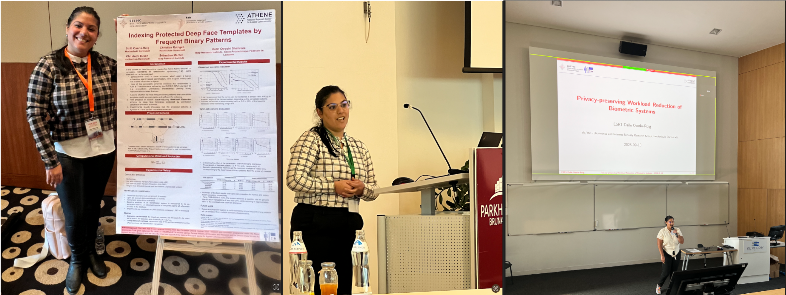

Certificates and
Talks
I have been actively giving talks on the field of biometrics, particularly in the areas of ML and Security at top conferences in the field such as IJCB and WIFS. Below, you can find links to slides of selected talks as well as my experience as Teaching Assistant. In addition, this page provides a list of certifications and courses I completed.

Talks
-
International Conferences
"Exploring Quality Scores for Workload Reduction in Biometric Identification"
EAB-RPC 2022 Fraunhofer IGD Darmstadt and IEEE International Workshop on Biometrics and Forensics (IWBF) 2022 Slides
"Indexing Protected Deep Face Templates by Frequent Binary Patterns"
International Joint Conference On Biometrics (IJCB) 2022 in Abu Dhabi Slides Poster
"Privacy-preserving indexing of large-scale biometric databases"
XIX Int.l Summer School for Advanced Studies on Biometrics: Continually Learning Biometrics 2022 in Alghero, Italy Poster
"Optimizing Key-Selection for Face-based One-Time Biometrics via Morphing" A collaborative effort
IEEE International Workshop on Information Forensics and Security (WIFS) 2023 in Nürnberg, Germany Slides
"Reversing Deep Face Embeddings with Probable Privacy Protection" A collaborative effort
IEEE International Workshop on Information Forensics and Security (WIFS) 2023 in Nürnberg, Germany Slides
"Privacy-preserving Workload Reduction of Biometric Systems".
Workshop on Frontiers in Privacy and Security for Biometrics in Europe 2023 in EURECOM - French Riviera Slides Poster
Thesis:"Privacy Preserving Workload Reduction in Biometric Systems".
Defense of my PhD Thesis 2024 in da/sec group Hochschule Darmstadt Slides -
Teaching Assistant
Biometric Systems, Hochschule Darmstadt(H-da), 2023
Biometric Systems, Hochschule Darmstadt(H-da), 2022
Cryptography, Hochschule Darmstadt(H-da), 2021
-
AI with Large Language Models Issued by DeepLearning.AI, 2024
Certificate Capstone project
The Nuts and Bolts of Machine Learning Issued by Google Advanced Data Analytics, 2024
Certificate Capstone project
Regression Analysis: Simplify Complex Data Relationships Issued by Google Advanced Data Analytics, 2024
Certificate Capstone project
The Power of Statistics Issued by Google Advanced Data Analytics, 2024
Certificate Capstone project
Get Started with Python Issued by Google Advanced Data Analytics, 2023
Certificate Capstone project
Foundations of Data Science Issued by Google Advanced Data Analytics, 2023
Certificate
Training on Legal and Ethical Aspects of Privacy Preservation and Privacy Research Issued by TReSPAsS-ETN-Project, 2022
Certificate